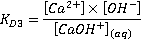

Pipe in need of descaling
Descaling is the removal of limescale for industrial and domestic water users in hard water areas.
 Calcium carbonate equilibria
Calcium carbonate equilibria
 Water softening
Water softening
 Magnetic descaling
Magnetic descaling
 Solubility product
Solubility product
'In Parsonage Yard at Maidford, is a well ....that has hard water....another.... has very soft water'
One of the earliest references to hard and soft water
The Natural History of Northamptonshire, John Morton, 1712
Hard water is water that has high calcium or magnesium ions content (>≈ 1.2 mM ) acquired during its passage through calcium or magnesium-containing rock such as limestone or chalk. The amount of dissolved calcium and magnesium in water determines its "hardness", expressed as the equivalent amount of calcium carbonate in parts per million (mg ˣ L−1). d In hard water, soap solutions form a precipitating scum (e.g., a bathtub ring), making it 'hard' when washing. 'Soft' water feels soft and slippery when washing.
Soap, e.g., white scum
2 C17H35COO−(aq) + Ca2+(aq)  (C17H35COO)2Ca (ppt)↓
(C17H35COO)2Ca (ppt)↓
Hardness is the capacity of water to react with soap, hard water requires considerably more soap to produce a lather. Hard water also forms scale (mainly due to CaCO3, Mg(OH)2, and CaSO4, but also other polyvalent ions, such as Al3+, Ba2+, Fe3+, Fe2+, Mn2+, Sr2+, and Zn2+) that stains and clogs hot water pipes, heat exchangers, kettles, steam cleaners, hot-water valves, and boilers. Both these negative effects can be reduced by the removal of Ca2+ and Mg2+ ions (water softening).
Classification into 'hard' or 'soft" water is not internationally standardized; water having < 60 mg ˣ L−1 ( < 60 ppm) calcium carbonate equivalent is generally regarded as 'soft' whereas water having > 120 mg ˣ L−1 ( > 120 ppm) calcium carbonate equivalent is generally regarded as 'hard'. Rainwater is exceptionally soft (≈ 1 mg ˣ L−1 calcium carbonate equivalent), and seawater is extremely hard (> 6000 mg ˣ L−1 calcium carbonate equivalent). In domestic settings, hard water is often indicated by a lack of suds formation when soap is agitated in water, as the minerals precipitate the soap as scum. Hard drinking water is generally not harmful to health, seems protective against cardiovascular disease, and can usefully serve as a dietary supplement for calcium and magnesium. However, it can cause the formation of limescale in domestic and industrial boilers and water treatment. Most wines (> 198 mg ˣ L−1), beers (> 240 mg ˣ L−1) and bottled waters (e.g., Evian (313 mg ˣ L−1), Perrier (418 mg ˣ L−1), and San Pellegrino (605 mg ˣ L−1) use hard water sources [3459].
Limescale (mainly calcium carbonate, plus calcium sulfate, barium sulfate, calcium phosphate, magnesium hydroxide, zinc phosphate, iron hydroxides, and silica, dependent on the geographical area) is a problem in heated water systems wherever 'hard' water is obtained from limestone or chalk countryside. It is formed primarily because the solubility of calcium carbonate decreases with increasing temperature. Limescale is only a problem if calcium carbonate deposits calcite crystals, forming directly or after metastable hexagonal and fibrous vaterite crystal formation. Hard water may be treated, and limescale can be removed, by water softening or the process of acidification and descaling.
[Back to Top  ]
]
On heating a solution containing dissolved bicarbonate, the following reaction occurs irreversibly due to the loss of gaseous CO2.
Ca(HCO3)2 (aqueous)  CaCO3 (ppt)↓ + H2O + CO2 (gas)↑
CaCO3 (ppt)↓ + H2O + CO2 (gas)↑
The thermodynamic formation/dissolution of solid CaCO3 from/in aqueous solution involves the four CO2 equilibria plus water dissociation plus four Ca2+(aq) relationships (given below with data at 25 °C) [2182].
| 2 H2O |
Kw = [H3O+] ˣ [OH−] |
Kw = 0.991 ˣ 10−14 mol2 ˣ L−2 |
| CO2 (g) + H2O |
KH = 29 [IAPWS] | |
| CO2 (aq) + H2O |
|
KD = 590 |
| H2CO3 + H2O |
K1 = 0.25 mM |
|
| Ka1 = 0.45 µM (apparent) | ||
| HCO3− + H2O |
|
Ka2 = 0.047 nM |
| CaCO3 (solid) |
KS = 3.35 nM (calcite) KS = 4.49 nM (aragonite) |
|
| CaCO3 (aq, ion-pair) |
|
KD = 0.703 mM |
| Ca(HCO3)+(aq, ion-pair) |
KD2 = 96.6 mM | |
| CaOH+(aq, ion-pair) |
 |
KD3 = 71.0 mM |
There is a total of nine equilibria in eleven unknowns (CaCO3 (aq), H3O+, Ca2+(aq), CaHCO3+ (aq), CaOH+ (aq), OH−, HCO3−, CO32−, CO2 (g), CO2 (aq), H2CO3). A further equation is the charge balance (positive charges = negative charges)
H3O+ + 2 Ca2+(aq) + CaHCO3+ (aq) + CaOH+ (aq) = OH− + HCO3−(aq) + 2 CO32−(aq)
so allowing all of the equilibrium concentrations to be calculated, given one of them. However, it is not straightforward as there are three different KS values dependent on the crystal form, the equilibrium constants are disputed/inaccurate, and the concentration-dependent hydration equilibria involving bound water are not included.
Further complications are found in the presence of magnesium ions due to the presence of Mg(HCO3)+ and MgCO3 (aq) ion pairs [3923] (similar to the calcium ion pairs above). The ion-pair formation constants have been obtained,
Mg(HCO3)+(aq, ion-pair)  Mg2+(aq) + HCO3−(aq) KMgHCO3+ = 76 mM
Mg2+(aq) + HCO3−(aq) KMgHCO3+ = 76 mM
MgCO3 (aq, ion-pair)  Mg2+(aq) + CO32− (aq) KMgCO3 = 1.05 mM
Mg2+(aq) + CO32− (aq) KMgCO3 = 1.05 mM
also, Mg2+(aq) + 2 OH−  Mg(OH)2 (ppt)↓ Ksp = [Mg2+] ˣ [OH−]2 = 5.61 × 10−12 M3
Mg(OH)2 (ppt)↓ Ksp = [Mg2+] ˣ [OH−]2 = 5.61 × 10−12 M3
Mg(OH)2 being far less soluble than Ca(OH)2 ( Ksp = [Ca2+] ˣ [OH−]2 = 5.5 × 10−6 M3). c
The solubility of CaCO3 with temperature [2178]
![Solubility of CaCO3 with temperature [2178]](images/caco3_crystals.gif "Solubility of CaCO3 with temperature [2178]")
[CaCO3](S) is given the value unity in the equation. Ca(HCO3)2 is not thought to exist as a solid or by ion association and evaporating stoichiometric solutions give CaCO3 and CO2 rather than a solid Ca(HCO3)2. Slightly different values for the solubility product (KS) are provided in the literature. The crystal form of the CaCO3 also has an effect, with aragonite being about 16% more soluble (KS 34% greater) and vaterite being twice as soluble (KS four times greater) [2178]. All these solubilities reduce with increasing temperature, which is why dissolved CaCO3 forms scale in heated pipes. Also, these solubilities increase with increasing dissolved CO2 and more acidic pH. KS is an equilibrium value and does not relate to the kinetics of any dissolution/ precipitation. As calcite is the least soluble, at equilibrium at ambient temperature where aragonite is about one kJ ˣ mol−1 less stable [107], aragonite and vaterite in water convert to calcite. Aragonite is, however, kinetically if not thermodynamically, favored to precipitate at higher temperatures.
Water saturated with CaCO3 in equilibrium with pCO2 = 0.0003 atm forms about 10 µM CO2 (aq) solution of pH 8.3, containing about 0.5 mM Ca2+, 5 µM CaCO3 (aq), 5 µM CaHCO3+(aq), 20 nM CaOH+(aq), 10 µM carbonic acid (H2CO3), 1.0 mM HCO3−, 10 µM CO32−. This is close to the reaction (CaCO3 + O2 + H2O  Ca2+ + 2 HCO3−) of 0.5 mM CaCO3 dissolved to give 0.5 mM Ca2+ and 1 mM HCO3−.
Ca2+ + 2 HCO3−) of 0.5 mM CaCO3 dissolved to give 0.5 mM Ca2+ and 1 mM HCO3−.
A range of different CaCO3–based functional poly-crystalline materials is produced by natural processes involving soluble additives to amorphous CaCO3 [3613]. An example is the nacre (mother of pearl), in pearls and shells formed by aragonite platelets.
The water orientation at the CaCO3-water interface has been examined using atomic force microscopy, sum-frequency generation spectroscopy, and molecular dynamics simulations [4308].
[Back to Top  ]
]
Water softening is the process of removing the Ca2+ and Mg2+ ions. The usual method is to use an ion exchange resin (for example, sulfonated polystyrene) to replace them with Na+ ions.
Na+··· Resin··· Na+ + Ca2+(aq)  Resin:::Ca2+ + 2 Na+(aq)
Resin:::Ca2+ + 2 Na+(aq)
The resin is usually made of small beads. After it is full of Ca2+ and Mg2+ ions, it is regenerated by washing with an excess of NaCl salt.
Resin:::Ca2+ + 2 Na+(aq)) (excess)  Na+··· Resin··· Na+ + Ca2+(aq)
Na+··· Resin··· Na+ + Ca2+(aq)
Laundry detergents soften the wash water by including chelating agents, such as sodium tripolyphosphate, sodium carbonate (washing soda), sodium sulfate, or polycarboxylates (in Calgon®) to suspend or precipitate the Ca2+ and Mg2+ ions. Softening also gives better wear-resistance to both clothing and plumbing. Commercial softening (e.g., for small communities) may make use of CaO (quicklime) or Ca(OH)2 (lime-water) to precipitate Mg2+ as its hydroxide and basic magnesium carbonate and to gather atmospheric CO2 to precipitate Ca2+ as its carbonate. Washing soda (Na2CO3) also works by precipitation,
CaCL2 (aq) + Na2CO3 (aq)  CaCO3 (ppt)↓ + 2 NaCl(aq)
CaCO3 (ppt)↓ + 2 NaCl(aq)
5 MgCL2 (aq) + 5 Na2CO3 (aq) + 5 H2O  Mg(OH)2.3MgCO3·3H2O(ppt)↓ + Mg(HCO3 )2 (aq) + 10 NaCl(aq)
Mg(OH)2.3MgCO3·3H2O(ppt)↓ + Mg(HCO3 )2 (aq) + 10 NaCl(aq)
Mg(OH)2.3MgCO3·3H2O is basic magnesium carbonate.
Water that is purified by ion exchange, distillation, desalination, or collected from the rain or snow contains effectively no Ca2+ nor Mg2+ ions and is very soft. Softened water where Na+ ions wholly or partially replace the Ca2+ and Mg2+ ions may be unsuitable or less suitable for some uses, such as irrigation as they produce alkaline soils, or as drinking water, as they do not contain health-giving ions essential for babies and infants, or some food processing like the use of a pod coffee maker as they may cause excessive swelling.
[Back to Top  ]
]
It is widely reported that magnetic fields may halt or reverse scale build-up [2213, 2676]. The literature is somewhat confused, with some reporting that orthorhombic aragonite crystals have a higher density but, although intrinsically harder, are less prone to form hard scale on surfaces [104], whereas other papers report aragonite is more troublesome forming the harder scale on surfaces [2183]. There seems to be little experimental literature to decide one way or another, and in any case it is the relative (kinetic) ability of the precipitating particles to stick to surfaces rather than themselves, under the prevailing physical (e.g., electrical and magnetic fields) and chemical (e.g., Mg2+ and Fe3+ content) conditions that is of overriding importance.
CaCO3 crystal |
Density, g cm−3 |
Solubility product, M2 25 °C |
||
| Calcite | Trigonal (R3c) | 2.701 |
3.4 ˣ 10−9 |
|
| Aragonite | Orthorhombic (Pmcn) | 2.904 |
6.0 ˣ 10−9 |
|
| Vaterite | Hexagonal (P63/mmc) | 2.560 |
1.2 ˣ 10−8 |
|
The mechanism by which the magnetic field produces its effect seems down to the presence of disordered hydrated CaCO3 aggregates [1954], a forming liquid emulsions that may be affected by the magnetic field and so convert into different prenucleation clusters and hence different structures on crystallization [1955].
The solubilities of the different crystal forms of CaCO3 follow the expected trend in so far as the higher the number of crystal edges and corners, the greater the solubility. Once formed, crystals are kinetically (if not thermodynamically) stable for hundreds of hours. By drawing water through a static magnetic field (B ≈ 0.1 T, B≈ 10 T ˣ m−1, it has been shown that the initial amount of aragonite formed is significantly increased over calcite in samples with and without the presence of dissolved iron [107], although this aragonite eventually changes to calcite [555]. A separate experiment has shown that drawing a pure calcium carbonate and bicarbonate solution through static magnets (0.16 T) for 5-30 min increases the precipitate formed on degassing the excess dissolved carbon dioxide [1043]. Magnetic treatment has been shown to affect the crystal surfaces of both aragonite and calcite [1689] and increases the rate of aragonite crystallization over that of calcite [2184].
The direction and variation of the magnetic fields have also been shown to be important [555], with crystal size decreasing with increasing magnetic field [623]. A different group has shown agreement in a study where under similar conditions (B = 0.5 T, flow rate = 0.1 m ˣ s−1) the magnetic field produces mainly a mixture of aragonite (44%) and vaterite (42%) whereas without it well-crystallized calcite (34%) is formed with little aragonite (14%) [252]. It has been proposed that the smaller water cluster size, being more reactive, hydrates the calcium and carbonate (particularly; see a supporting study [793]) ions more effectively and so encourages aragonite nucleation [110]. Alternatively, the magnetic field may cause surface or orientation effects on the growing crystals [980]. However, it is possible that the major effect is the magnetically induced competitive formation of hydrated silica in suitable solutions that then absorbs calcium ions [353]. The pipe material and its surface were also found to be important [1586].
There are many devices on the market for the magnetic treatment of water to remove such limescale. The sales success of these devices would seem to indicate that some work as promoted, at least under some circumstances.
Magnetic treatment of water is claimed to cause four effects: [104]
Many tests, mainly utilizing single-pass systems, however, have proved negative [212]. Recirculatory systems with prolonged magnetic exposure give more supportive results. Rapid movement (1200 rpm) in a strong magnetic field (4.75 T) had a significant effect compared with the movement or field alone [105]. A smaller number of larger crystals causes the effect as nucleation is suppressed and crystal growth is enhanced. It is possible that the result is due to magnetically-enhanced corrosion promoting the release of Fe2+ that, even at ppm, reduces calcite but has no effect on aragonite production. We know that inhibiting the thermodynamic transformation of aragonite into calcite. Fe2+ may be used as a threshold inhibitor by industry. However, the amount of dissolution required by this theory has not been found. Magnetic treatment devices that create additional turbulence may enhance the anti-scaling effect [109], perhaps by encouraging precipitation in the bulk (due to a combination of magnetically modifies hydration and the shifting of charged particles in the magnetic field [645]) rather than by deposition. Another contributing factor may be the lowering of the surface tension, multiple passes producing increased lowering up to about 8% [735]. A potential (= v ˣ B ˣ L where L is the distance between detecting electrodes) is generated when a dilute electrolyte flows (v) through a transverse magnetic field (B, greatest when the flow is orthogonal to the magnetic field). This may increase colloidal coagulation. A well-controlled study has shown that scaling can be reduced by a few percents by even one pass through a simple magnetic device but that it is difficult to increase this effect to more than about 20% even with extensive recirculation [259]. This study also showed an optimum flow rate as the magnetic field was encountered only briefly at too high a flow rate, an effect confirmed [555]. The presence of dissolved oxygen has been shown important for the production of the magnetic effect for forming aragonite rather than calcite [970] and for initiating scaling [1046]. It may be assumed that many of the studies described on this page did not control for oxygen content, so the varying dissolved oxygen contents may have moderated their effects.b
There are 'electronic' devices related to the above purely magnetic devices that use weak electromagnetic signals utilizing a coil wound around a pipe. A square-wave pattern is often used as it effectively contains frequencies from a few Hz to 100 kHz [657]. This changes the magnetic field ilike a number of rapid passes past a very weak static magnet. However, the changing electric field will also contribute to the effect, as shown using a pulsed electric field [799]. 13.56 MHz at 2 V has been found to work well [1626]. Nanobubbles interact with calcium carbonate and an alternating magnetic field to remove scale from cooling water pipes [4061].
Magnetic sorption may be used to treat wastewaters from a Wastewater Treatment Plant., where magnetite particles reduce detergents and chemical oxygen demand (COD) [4430]. Additionally, phosphates, nitrogen, and the majority of heavy metals are also removed.
[Back to Top  ]
]
a These sloppy colloidal objects are known as DOLLOPs (dynamically-ordered liquid-like oxyanion polymers) [1954]
Ca2(aq) + 2 HCO3−(aq) + 2 H2O  (CaCO3 · H2O · HCO3−) (DOLLOP) + H3O+
(CaCO3 · H2O · HCO3−) (DOLLOP) + H3O+
[Back]
b Oxygen can be removed using sodium sulfite plus cobalt chloride (catalyst). [Back]
c Solubility product. For a ternary compound AaBbCc, the solubility product (Ksp) is given by Ksp = [A]a ˣ [B]b ˣ [C]c. The solubility (s*) of a pure salt can be calculated from the solubility product, so long as no cross-reactions occur
so the solubilities of Mg(OH)2 and Ca(OH)2 are (5.61 ˣ 10−12 /4)1/3 = 0.11 mM and (5.5 ˣ 10−6/4)1/3 = 11 mM respectively. Due to the formation of hydroxo-complexes, these values are inaccurate [3926]. [Back]
d Definition of hardness. There is no generally accepted definition of water hardness with putative definitions split about equally between (a) reaction with soap, including the effect of many polyionic cations, and (b) a combination of the concentrations of just Ca2, and Mg2+ ions. However, the results of both of these definitions end up with stating 'hardness' in terms of the equivalent concentration of CaCO3. The total permanent hardness is perhaps best given by calcium hardness + magnesium hardness + strontium hardness, with the molar masses of Ca2+, Mg2+ ,, Sr2+, and CaCO3 being 40.078, 24.305, 87.621, and 100.086.
The CaCO3 equivalent of Ca2+ ions is MCaCO3/MCa2+ = 100.086/40.078 = 2.497
The CaCO3 equivalent of Mg2+ ions is MCaCO3/MMg2+ = 100.086/24.305 = 4.118
The CaCO3 equivalent of Sr2+ ions is MCaCO3/MSr2+ = 100.086/87.621 = 1.142
So the total permanent water hardness expressed as equivalent of CaCO3 is:
[CaCO3] = 2.497 ˣ [Ca2+] + 4.118 ˣ [Mg2+] + 1.142 ˣ [Sr2+]
1 mM hardness ≡ 100.09 ppm ≡ 100.09 mg ˣ L−1
Generally, there is little strontium present and precision in these figures is not required.
[Back]
Home | Site Index | Magnetic and electromagnetic effects | LSBU | Top
This page was established in 2002 and last updated by Martin Chaplin on 19 February, 2022